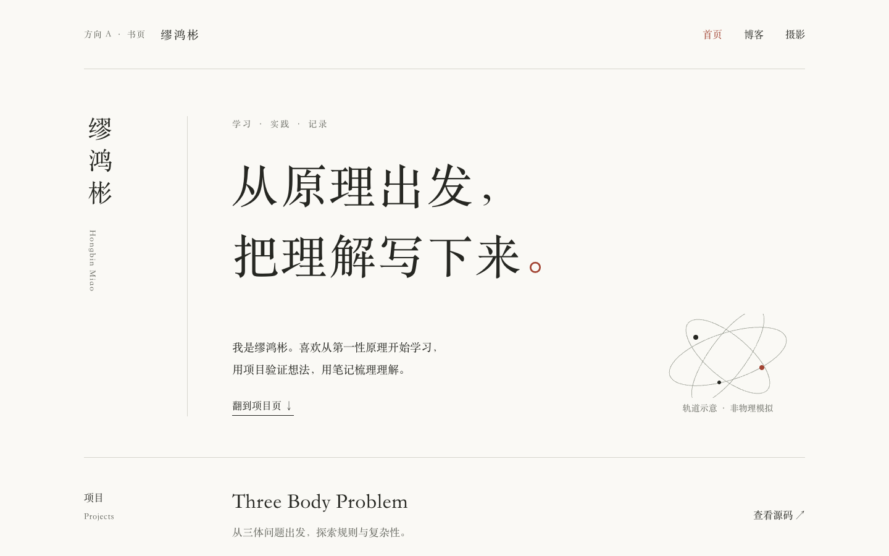
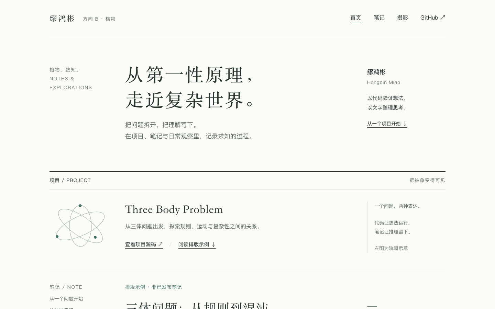
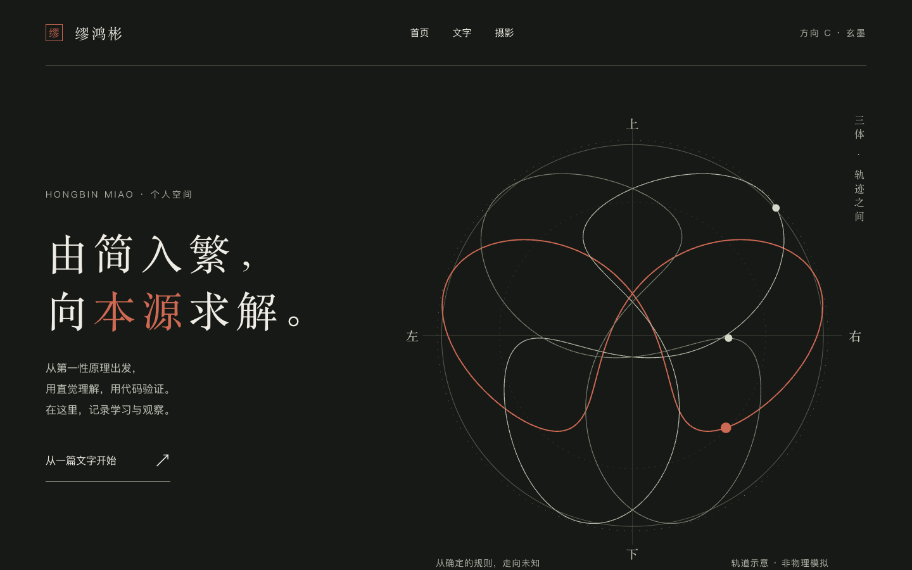

A · 书页
书页构图与竖排姓名，强调个人气质。
设计思维：留白与书籍版式
B · 格物
阅读、旁注与图解，强调知识表达。
参照：Distill 的交互式文章
C · 玄墨
深墨色实验空间，衔接安静的阅读页面。
风格探索：天文图录与中国墨色最新审核：英文主页 · 水墨山水版 → Notes 列表 →

书页构图与竖排姓名，强调个人气质。
设计思维：留白与书籍版式
阅读、旁注与图解，强调知识表达。
参照：Distill 的交互式文章
深墨色实验空间，衔接安静的阅读页面。
风格探索：天文图录与中国墨色本轮图形为轨道示意，尚未实现 Threlte 三维场景与物理模拟。文章明确标为排版示例。正式网站仍保留原样。
你可以直接回复「更喜欢 A 的排版、C 的氛围，红色再少一点」这样的具体意见。